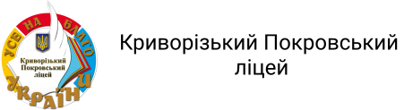

Прорахувати конкурсний бал
Прорахувати який бал треба отримати
Оберіть факультет, на який плануєте послупати:
Дошкільна освіта
Початкова освіта
Середня освіта (Українська мова і література)
Середня освіта (Мова та зарубіжна література)
Середня освіта (Історія)
Середня освіта (Математика)
Середня освіта (Біологія та здоров'я людини)
Середня освіта (Хімія)
Середня освіта (Географія)
Середня освіта (Фізика та астраномія)
Середня освіта (Інформатика)
Середня освіта (Трудове навчання та технології)
Середня освіта (Фізична культура)
Середня освіта (Образотворче мистецтво)
Середня освіта (Музичне мистецтво)
Середня освіта (Природничі науки)
Середня освіта (Захист України)
Професійна освіта (за спеціалізаціями 015.31 - 15.33, 015.39)
Професійна освіта (за спеціалізаціями 015.34 - 015.38)
Спеціальна освіта
Дизайн (крім спеціалізацій ...)
Музеєзнавство, пам’яткознавство
Менеджмент соціокультурної діяльності
Інформаційна, бібліотечна та архівна справа
Релігієзнавство
Історія та археологія
Філософія
Культурологія
Філологія (українська мова та література)
Філологія (інші)
Богослов'я
Економіка
Політологія
Психологія
Соціологія
Журналістика
Облік і оподаткування
Фінанси, банківська справа, страхування та фондовий ринок
Менеджмент
Маркетинг
Підприємництво та торгівля
Право
Біологія та біохімія
Екологія
Хімія
Науки про Землю
Фізика та астрономія
Прикладна фізика та наноматеріали
Географія
Математика
Статистика
Прикладна математика
Інженерія програмного Інженерія
Комп'ютерні науки
Комп'ютерна інженерія
Системний аналіз
Кібербезпека та захист інформації
Інформанийні системи та Прикладна
Прикладна
Матеріалознавство
Галузеве машинобудування
Авіаційна та ракетно-космічна техніка
Суднобудування
Металургія
Електроенергетика,, електротехніка та електромеханіка
Енергетичне машинобудування
Атомна енергетика
Теплоенергетика
Відновлювальні джерела енергії та гідроенергетика
Хімічні технології та інженерія
Біотехнології та біоінженерія
Біомедична інженерія
Електроніка
Електронні комунікації та радіотехніка
Авіоніка
Автоматизація, комп'ютерно-інтегровані технології та робототехніка
Інформаційно-вимірювальні технології
Мікро- та наносистемна техніка
Харчові технології
Технології легкої промисловості
Технології захисту навколишнього середовища
Гірництво
Нафтогазова інженерія та технології
Видавництво та поліграфія
Деревообробні та меблеві технології
Будівництво та цивільна інженерія
Геодезія та землеустрій
Гідротехнічне будівництво, водна інженерія та водні технології
Агрономія
Захисті і карантин рослин
Садівництво, плодоовочівництво та виноградарство
Технологія виробництва і переробки продукції тваринництва
Лісове господарство
Садово-паркове господарство
Водні біоресурси та аквакультура
Агроінженерія
Ветеринарна медицина
Стоматологія
Медицина
Медсестринство
Технології медичної діагностики та лікування
Медична психологія
Фармація, промислова фармація
Терапія та реабілітація
Педіатрія
Громадське здоров'я
Соціальна робота
Соціальне забезпечення
Тотельно-ресторанна справа
Туризм і рекреація
Національна безпека (за окремими сферами забезпечення і видами діяльності)
Управління інформаційною безпекою
Пожежна безпека
Правоохоронна діяльність
Цивільна безпека
Морський та внутрішній водний транспорт (всі спеціалізації)
Авіаційний транспорт
Залізничний транспорт
Автомобільний транспорт
Транспортні технології (за видами) - для всіх
Публічне управління та адміністрування
Міжнародні відносини, суспільні комунікації та регіональні студії
Міжнародні економічні відносини
Міжнародне право
Введіть кількість балів, яку ви скоріш за все, отримаєте з
Української мови
Введіть кількість балів, яку ви скоріш за все, отримаєте з
Математики
Оберіть
третій предмет
, та введіть кількість балів, яку ви скоріш за все, отримаєте по ньому
Історія України
Іноземна мова
Біологія
Фізика
Хімія
Загальний бал
Введіть який
загальний бал
ви бажаєте отримати
Предмет
Бал
Історія України
Іноземна мова
Біологія
Фізика
Хімія
Предмет
Історія України
Іноземна мова
Біологія
Фізика
Хімія
Бал
Розрахувати